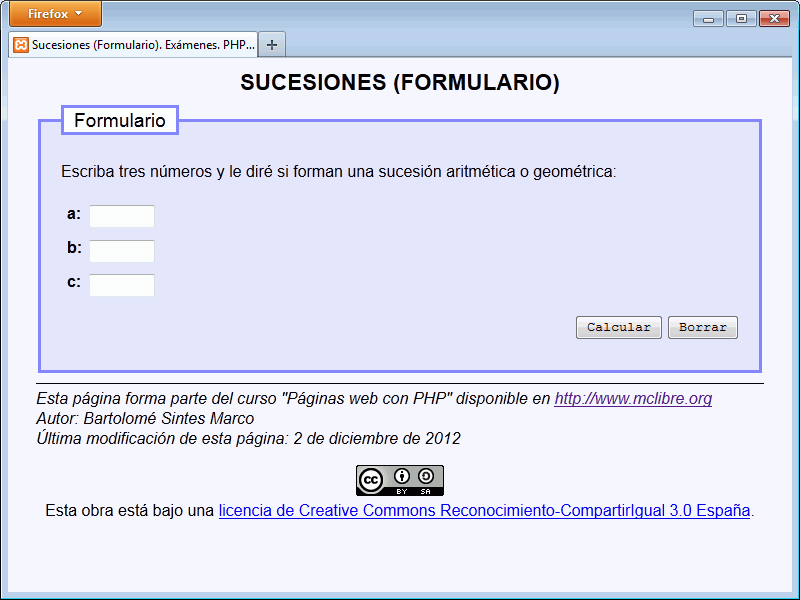
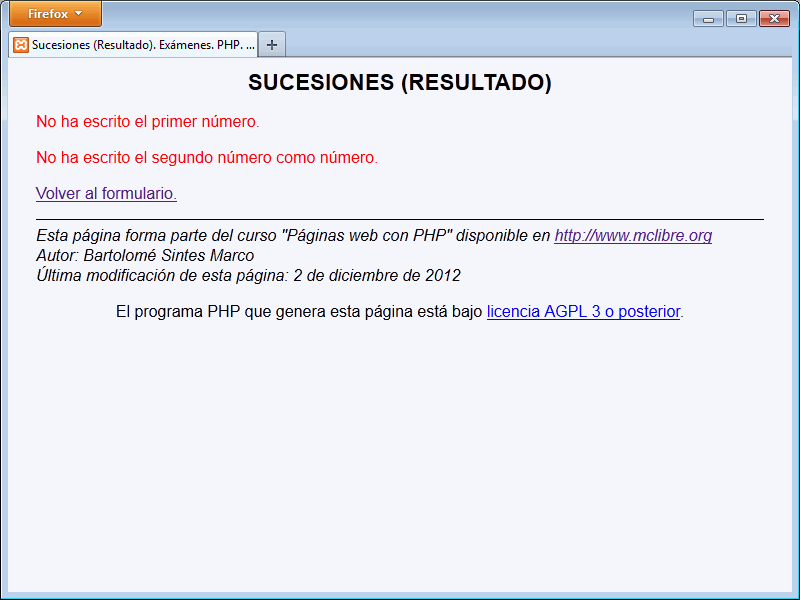
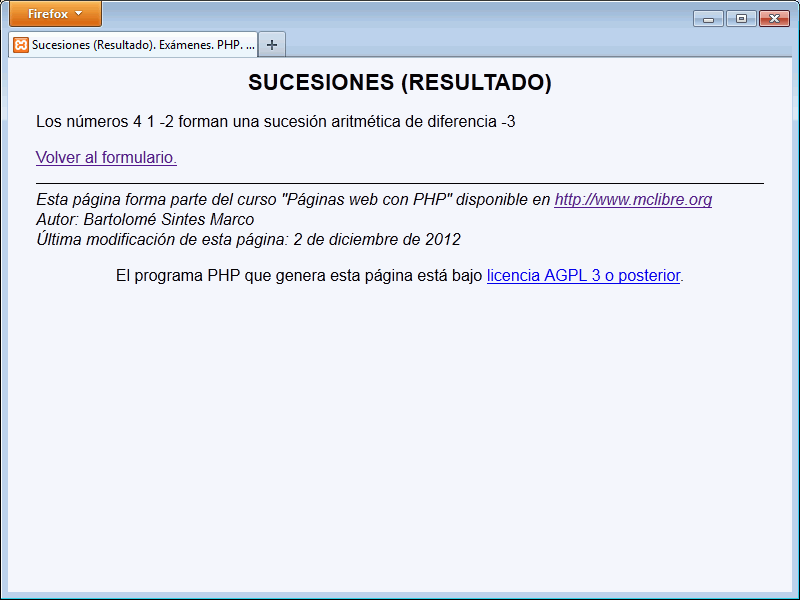
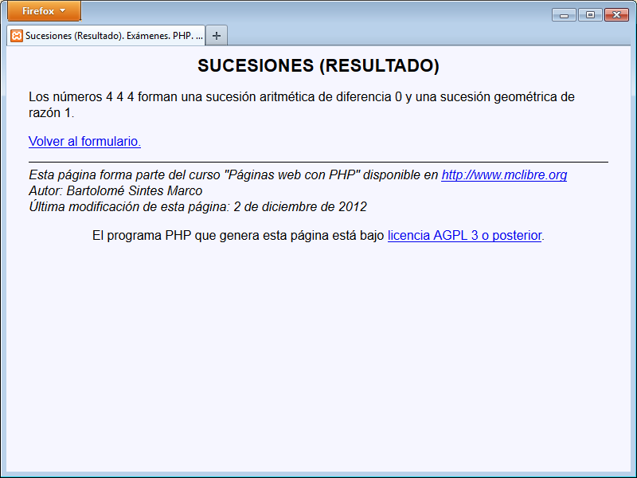
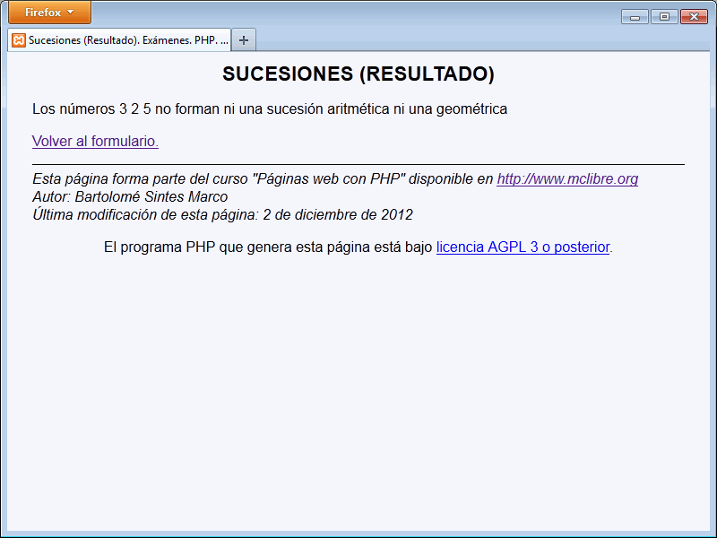

En este ejercicio se debe crear un programa que pida tres números y que diga si forman una sucesión aritmética o geométrica.
Sucesiones - Comentarios
El programa tendrá dos páginas:
La primera pide los valores.
La segunda escribe la respuesta
Se deben rellenar todos los campos con valores numéricos.
En una sucesión aritmética la diferencia entre dos elementos consecutivos es siempre la misma y a esa cantidad se le llama la diferencia de la sucesión aritmética.
En una sucesión geométrica el cociente entre dos elementos consecutivos es siempre el mismo y a esa cantidad se le llama la razón de la sucesión geométrica.
Ejemplos de sucesiones:
3 6 10: no forman ni una sucesión aritmética ni una sucesión geométrica.
0 4 6: no forman ni una sucesión aritmética ni una sucesión geométrica.
1 5 0: no forman ni una sucesión aritmética ni una sucesión geométrica.
3 0 2: no forman ni una sucesión aritmética ni una sucesión geométrica.
2 4 6: forman una sucesión aritmética de diferencia 2.
4 0 0: forman una sucesión geométrica de razón 0.
5 5 5: forman una sucesión aritmética de diferencia 0 y una sucesión geométrica de razón 1.
2 4 8: forman una sucesión geométrica de razón 2.
1 -1 1: forman una sucesión geométrica de razón -1.
0 0 0: forman una sucesión aritmética de diferencia 0 y una sucesión geométrica de razón cualquiera.
Capturas:





Sucesiones - Ejemplo de programa
Nota: El día del examen los alumnos no tienen acceso a este ejemplo, solamente tienen acceso a las capturas del apartado anterior.
Un ejemplo de programa puede probarse en la ventana siguiente